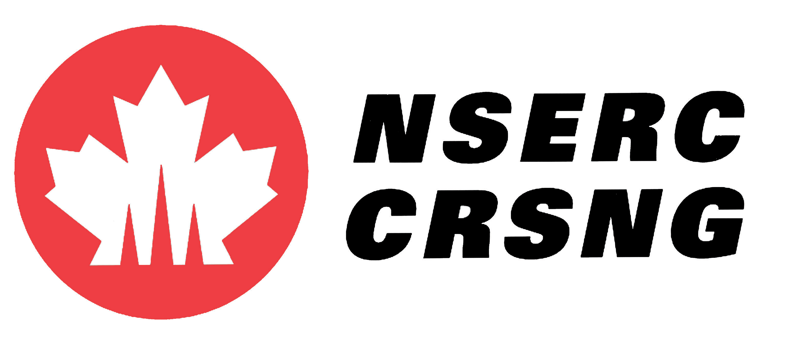

Javascript... FOR SCIENCE!
the need for interdisciplinary co-operation
I'm Angelina Fabbro
@angelinamagnum on Twitter
I work for Mozilla
I work on Firefox OS
but also: I spend a lot of time teaching
I am Dr. Bill Mills
@billdoesphysics on twitter
I work for TRIUMF
Canada's national lab for nuclear physics.
Let's Change the World
REALTALK
Moore's Law, CERN Style
Sometimes You Just Don't Know Better


An Impetus to Write Unmaintainable Code

But Not All Labs Science The Same!
Getting in the Way of Yourself
You Don't Have to Do Everything Yourself
Science Should Always Be A Collaboration
How Do We Adapt Our Culture?
Programmers:
Just because you are not a scientist does not mean you can't contribute
Educate scientists on the merits of open-sourcing their code
Code Reviews
Code Refactoring
UI Design & Strategy

Scaling Infrastructure
Scientists:
If you are not a software engineer you are out of your domain
Get Your Code in the Open
Bring Software Developers and Computing Scienists On Board
Preferably Bring Them in EARLY!
Just Be Okay Admitting You Write Crap Code Sometimes
TDD/BDD
(test-driven-development/behavior-driven-development)
Modularization of Your Code

Let Our Powers Combine
interdisciplinaryprogramming.com
(tell your friends)
THANKS STRANGE LOOP!
with love
Angelina Fabbro / @angelinamagnum
Dr. Bill Mills / @billdoesphysics
